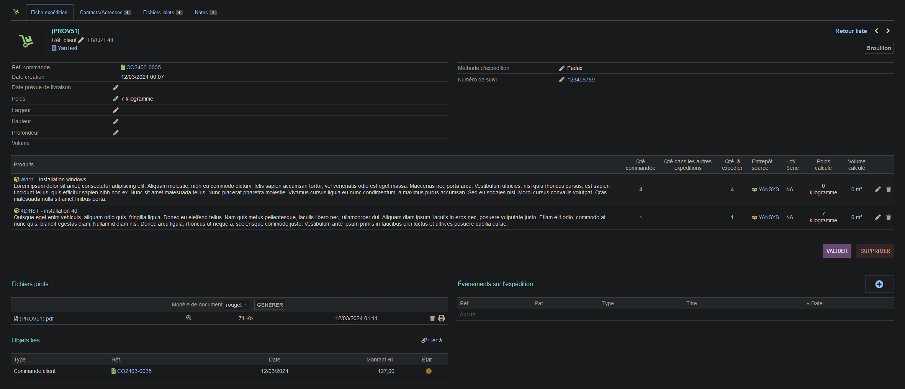
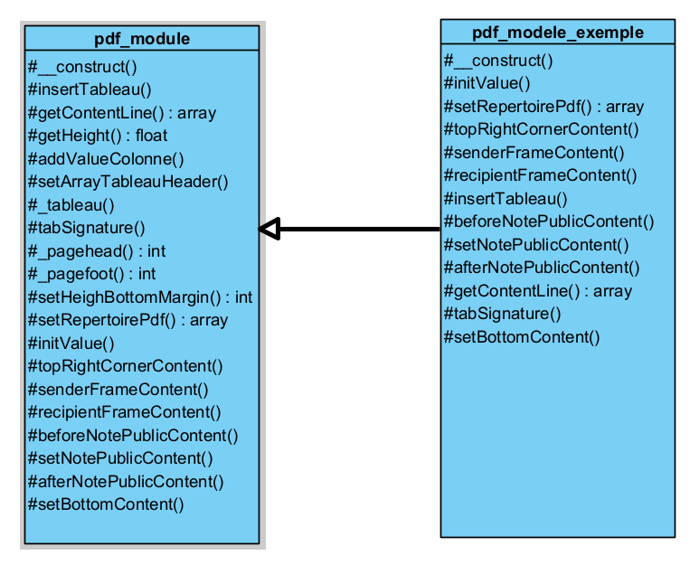
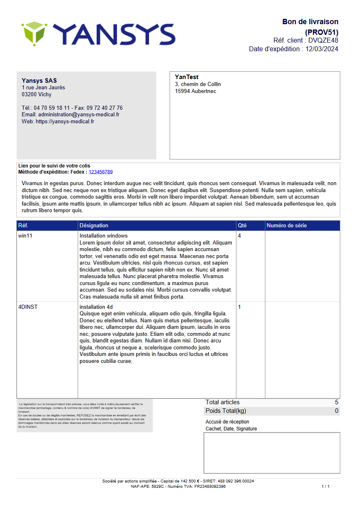

Mission 2nd stage : Création modèle PDF dolibarr
Contexte :
J'ai travaillé chez l'entreprise Yansys, sur leur ERP, il s'agit d'un ERP open source et gratuit développé en PHP, nommé dolibarr. J'avais comme tâche de modifier et créer des modèles de fichier PDF.
Le modèle est entièrement créé en PHP grâce à la librairie TCPDF intégré dans l'ERP. Pour créer de nouveau modèle il faut exploiter ceux déjà existant afin de pouvoir l'intégrer dans dolibarr.
Les modèles PDF créés sont composés d'un tableau, le tableau peut possiblement changer de page si besoin. Les données du tableau sont insérés par ligne et lors de l'insertion de la ligne on traite chacune des colonnes de la gauche vers la droite.
Nativement, quand une ligne est insérée, il vérifie si le texte insérer dans la colonne de gauche a changé de page et si c'est le cas, tous le reste du texte continue sur le page d'après.
Le code du modèle PDF est assez complexe et une évolution a été réalisé pour une simplicité d'utilisation.

Environnement technologique :
- Firefox
- Visual Studio Code
- MySql Workbench
- NotePad ++
- PHP
- Github
- Filezilla
compétences mobilisées :
- B1.2.3 : Traiter des demandes concernant les applications
J'ai dû modifier et créer plusieurs modèles PDF de l'ERP, cela consistait à changer le thème actuel, modifiant les colonnes, certains encadrés.
J'ai pu commencer par regarder le fonctionnement des modèles PDF sur l'ERP, un fichier PHP est créé, composé de 1000 lignes de codes afin de créer le fichier pdf. Mon problème a été de gérer comment réaliser un tableau en multipage. Le tableau insert les valeurs déjà par ligne puis par colonne et quand un changement de page est possible, il vérifie seulement si la colonne de gauche changé de page, et dans ce cas tous le reste de la ligne changer. Pour palier à ce problème j'ai dû entièrement calculer toutes les colonnes de ma ligne pour savoir si ça allait changer de page et quelle ligne était la plus grande afin qu’elle puisse imposer la taille maximum. Grâce à cette méthode, toutes les lignes pouvaient être si besoin sur 2 pages en simultané.
J'ai pu par la suite modifier le modèle du PDF afin de factoriser et minimiser le code que le développeur devra lire en réalisant une classe contenant le modèle et des méthodes placer à des emplacements clé, chacune de ces méthodes contrôlera une partie du PDF. Et pour créer un nouveau modèle il faudra hériter de cette classe.


- B1.5.2 : Déployer un service
J'ai pu mettre mon projet réaliser en production. Tout d'abord j'ai dû déposer mon code sur github afin que l'entreprise possède une un historique de mes modifications. Puis j'ai dû manuellement intégrer mes fichiers à partir de filezilla sur le serveur de l'ERP.